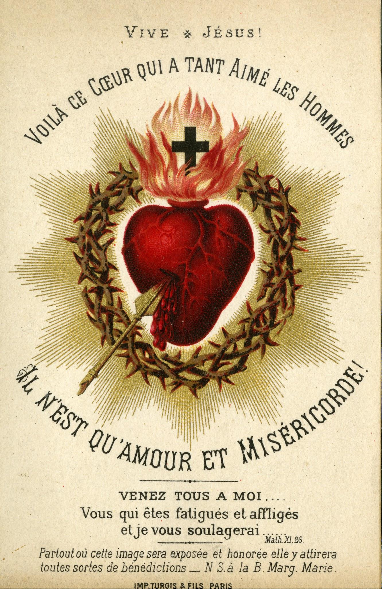

아기 예수님께 드리는 아침 인사
아기 예수님께 드리는 아침 인사
안녕하십니까, 하늘의 아기시여,
아기 예수님, 당신께 인사드리나이다!
오, 진심으로 당신을 사랑하나이다, 하느님의 아기시여, 저를 축복하소서!
하느님이신 어린 형제시여,
지난밤에 대하여 당신께 감사드리나이다.
당신을 통하여 저희 모두를 위한 감사가 하늘 아버지께 드려지게 하소서.
당신으로 말미암아 저희는 하느님의 자녀이며,
한없이 풍요롭나이다.
아버지의 기쁨을 위하여 저희 마음을 당신의 마음과 같게 만들어 주소서.
하늘의 아기시여,
저희 모두를 당신의 거룩한 작은 성심 안에 품어 주시고,
당신의 사랑으로 감싸 주시어 저희가 영원히 당신의 것으로 머물게 하소서!
오늘 저희가 생각하고 말하고 행하고 겪는 모든 것을, 아기 예수님,
모두 당신을 사랑하여, 당신께 감사하여, 당신을 기쁘게 해 드리기 위한 것이 되게 하소서!
저희와 저희가 사랑하는 이들을 축복하소서,
저희 가까이 있는 모든 이를.
가난한 이와 슬퍼하는 이를 도우시고, 길을 잃은 이들을 당신께로 이끄소서!
그리고 저의 마지막 때가 오면,
저를 하늘로 인도하소서.
기쁨에 넘쳐 영원히 당신께 말씀드리고자 하나이다. 아기 예수님, 사랑하나이다!